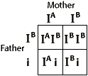

Blood Types Problem Set
Problem 1: Is a type O possible in this situation?
Help to answer the question
| Could you please help me? I have a question that is NOT a homework question. I am a Junior in High School. "Could a man with type B blood and a woman with type AB produce a child with type O blood?" I think not, because type O is recessive, and the B's seem to be dominant. My cousin thinks yes. Thank you for your help. -- Vicki |
Tutorial
Possible genotypes
| The possible genotypes of a man with blood type B are BB or BO and the genotype of a woman with blood type AB is AB. The child would receive an A allele or a B allele from the mother and a B allele or an O allele from the father. Therefore, the child could not possibly be of blood type O. The following diagrams are Punnett squares for the two possible combinations, i.e. AB x BB or AB x BO. | |
|  | |


Department of Biochemistry and Molecular Biophysics
University of Arizona
Thursday, October 23, 1997
Contact the Development Team
http://biology.arizona.edu
All contents copyright © 1997. All rights reserved
.